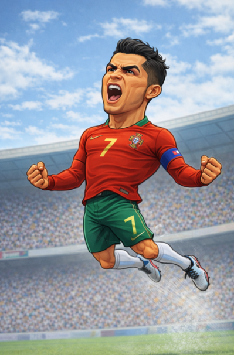

Cristiano Ronaldo: disciplina, ambición y mentalidad ganadora
Inicios
Cristiano Ronaldo dos Santos Aveiro nació en Funchal, Madeira, Portugal. Desde muy joven destacó por su carácter competitivo y una ética de trabajo poco común. Su talento lo llevó a ingresar a la academia del Sporting de Lisboa, donde su velocidad, potencia y determinación llamaron la atención del fútbol europeo.
Trayectoria en clubes
- Sporting CP: El club que vio nacer a Cristiano y lo proyectó al escenario internacional.
- Manchester United: Aquí se consolidó como estrella mundial, ganando títulos y su primer Balón de Oro.
- Real Madrid: La etapa más icónica de su carrera. Máximo goleador histórico del club y referente absoluto.
- Juventus: Lideró al equipo italiano con goles decisivos y mentalidad ganadora.
- Al-Nassr: Su llegada impulsó el crecimiento y visibilidad del fútbol en Medio Oriente.
Logros y reconocimientos
La carrera de Cristiano Ronaldo está marcada por récords y títulos que definen su grandeza:
- 5 Balones de Oro
- 5 UEFA Champions League
- Máximo goleador histórico de la Champions League
- Campeón de la Eurocopa 2016 con Portugal
- Máximo goleador histórico en selecciones nacionales
Cada logro refleja su obsesión por la excelencia y su capacidad para mantenerse en la élite durante más de una década.
Impacto económico
Cristiano Ronaldo es uno de los deportistas más influyentes y mejor pagados de la historia. Su imagen trasciende el fútbol, convirtiéndose en una marca global gracias a contratos publicitarios, redes sociales y proyectos empresariales que lo posicionan como un ícono del deporte moderno.
Estilo de juego
Potencia física, velocidad, salto impresionante y una mentalidad implacable definen el estilo de Cristiano Ronaldo. Capaz de marcar con ambas piernas y con la cabeza, es un delantero total, especialista en momentos decisivos y ejemplo de disciplina y preparación física.